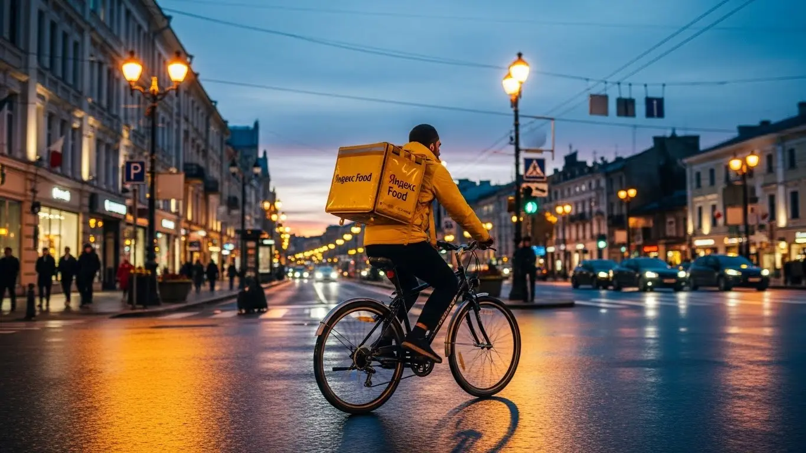
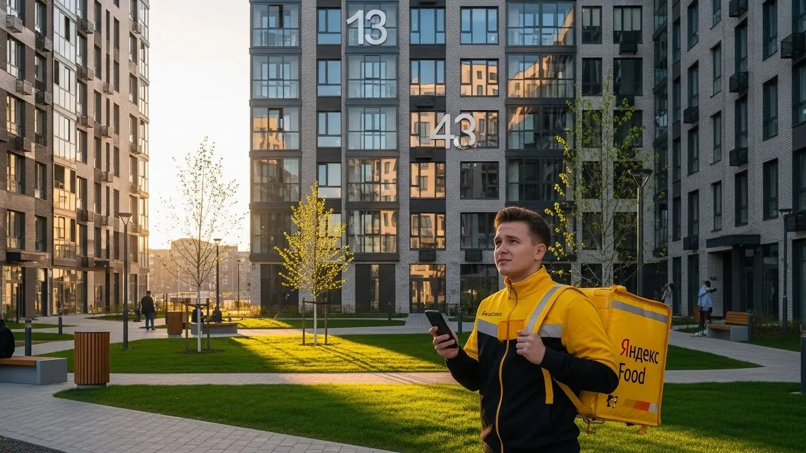

Работа курьером Яндекс Еды в Солнечногорске: доход, график (2025-2026)
- Работа курьером Яндекс Еды в Солнечногорске: для кого эта вакансия и что вы получите
- Сколько вы будете зарабатывать курьером в Солнечногорске: калькулятор дохода и разбор выплат
- Реальный заработок курьера в Солнечногорске: смены и месячный доход
- График работы и форматы занятости
- Требования к кандидату и документы
- Самозанятость, налоги и юридическая чистота
- Пошаговое оформление и первый выход на линию в Солнечногорске
- Пешком, на вело или на авто: что выгоднее в Солнечногорске
- Районы, маршруты и «топовые» зоны заказов в Солнечногорске
- Безопасность, страховка, штрафы и оплата простоя
- Плюсы и возможные минусы работы курьером в Солнечногорске
- Реальные истории и отзывы курьеров из Солнечногорске
- Короткие ответы на главные вопросы
- Ответы на главные вопросы о работе курьером Яндекс Еды в Солнечногорске
- Заключение
Все города
Привет! Думаешь попробовать себя в доставке и ищешь реальную информацию про работу курьером Яндекс Еды в Солнечногорске? Отлично, что заглянул. Наверняка уже слышал страшилки про копеечный доход, штрафы за каждый чих, убитую в хлам машину или велосипед, да еще и пробки на Ленинградке или в центре Солнечногорска, которые съедают все время и нервы. Забудь про рекламную шелуху – здесь я расскажу тебе, как обстоят дела на самом деле, без прикрас, именно в нашем городе.
Многие новички приходят в Яндекс Еду с розовыми очками, думая, что сейчас быстро срубят легкие деньги. А потом, через месяц-другой, разочаровываются и уходят. Почему? Да потому что не понимают всей «кухни» изнутри, особенно местной специфики. В Солнечногорске свои особенности: где-то заказов больше, где-то меньше, как объезжать пробки в часы пик, какие районы выгоднее для пешего, а какие для автокурьера. Незнание этих нюансов, а также расходов на бензин или обслуживание велосипеда, налогов для самозанятых, системы рейтинга и приоритета, приводит к тому, что ты просто теряешь время и деньги. А ведь можно было бы избежать этих ошибок, если бы заранее знать, как работает логистика по нашим улицам и новым микрорайонам. Если ты живешь в Солнечногорске, то подробнее про работу курьером Яндекс Еда в Солнечногорске, включая краткую сводку условий, FAQ, детальный калькулятор и форму заявки, можно почитать здесь: работа курьером Яндекс Еда в Солнечногорске.
Я не буду лить воду, а поделюсь своим опытом и опытом моих ребят. Мы разберём, какой формат работы курьером Яндекс Еды в Солнечногорске выгоднее именно для тебя – пешим, на велосипеде или на машине. Выясним, сколько реально можно заработать в Солнечногорске, посчитаем чистый доход с учетом всех расходов. Покажу на примерах, где находятся самые «рыбные» места для заказов, как погода и сезоны влияют на твой заработок, за что можно получить штраф и как их избежать. А еще расскажу, как Яндекс Еда выглядит на фоне конкурентов в нашем городе и поделюсь честными отзывами местных курьеров.
Я – Алексей, и уже не первый год в теме доставок и такси. Начинал сам курьером, а сейчас у меня небольшой таксопарк-партнёр, так что всю эту кухню знаю от и до, особенно в Солнечногорске. Моя задача – не продать тебе что-то, а дать максимально честную и полезную информацию, чтобы ты мог принять взвешенное решение. Давай по порядку, сейчас всё разложу по полочкам, как старший брат, который уже набил все шишки и знает, как сделать работу курьером в Солнечногорске максимально эффективной и прибыльной. Поехали!
Прежде чем мы углубимся в детали, предлагаю быстро пробежаться по основным моментам. Этот короткий ликбез поможет тебе сориентироваться в статье.
Экспресс-навигация: что ты точно узнаешь о работе курьером в Солнечногорске
В этой статье ты ТОЧНО узнаешь:
- Сколько реально можно заработать за смену в Солнечногорске на разных видах транспорта?
- Как выбрать самые «рыбные» районы и слоты в Солнечногорске, чтобы максимизировать доход?
- Какие требования к курьерам и можно ли работать с 16 лет в Яндекс Еде?
- Как оформить самозанятость и сколько налогов платить, чтобы работать официально?
- Что такое оплата простоя и как она защищает твой заработок от «мёртвых» часов?
- Какие ошибки новичков приводят к штрафам или снижению рейтинга и как их избежать?
А если тебе некогда читать всю статью — переходи сразу к заключению, где ты найдёшь короткие ответы на все эти вопросы и указания, в каких разделах искать подробности.
А чтобы сразу получить наглядное представление о возможностях, взгляни на нашу инфографику.
Ключевые цифры работы курьером Яндекс Еды в Солнечногорске
Доход в час (активные часы)
350–450 ₽
Зависит от спроса и коэффициентов
Доход за смену (8 часов)
2 800–3 600 ₽
При полной загрузке и хороших слотах
Средние расходы (авто)
200–400 ₽
На топливо и амортизацию в смену
Пиковые часы для заказов
12:00-14:00, 18:00-22:00
Особенно в центре и спальных районах
Гибкость графика
Полная свобода
Выбирайте слоты от 1 часа в любое время
Работа курьером Яндекс Еды в Солнечногорске: для кого эта вакансия и что вы получите
Если ты ищешь стабильный заработок с гибким графиком, вакансия курьера Яндекс Еды в Солнечногорске может стать отличным решением. Это не просто подработка, а реальная возможность самому управлять своим временем и доходом. Здесь не требуются годы опыта или специальные навыки, главное — желание работать и ответственный подход.
Сервис Яндекс Еда предлагает прозрачные условия и понятную систему выплат, что особенно важно для тех, кто только начинает свой путь в сфере доставки. Ты сам выбираешь, когда и сколько работать, а деньги получаешь регулярно, без задержек, благодаря системе ежедневных выплат. Это позволяет легко совмещать доставку с учебой, основной занятостью или личными делами.
Кому подойдёт эта работа в Солнечногорске
Эта вакансия идеально подходит для студентов, которым нужна подработка после пар или в выходные, чтобы покрыть свои расходы. Также она станет отличным стартом для тех, кто ищет работу без опыта — здесь всему научат, а начать можно буквально за пару дней. Если тебе важен свободный график и ежедневные выплаты, чтобы всегда иметь деньги на карте, то это твой вариант.
Многие водители, у которых есть личный автомобиль, рассматривают доставку на своем авто как способ дополнительного заработка или даже как основную занятость. Это позволяет эффективно использовать машину и получать доход, не привязываясь к офису. В целом, работа в Яндекс Еде в Солнечногорске — это про гибкость и возможность быстро получить вознаграждение за свой труд. Здесь также можно рассмотреть варианты работы в Яндекс Доставке для более широкого спектра заказов.

Главные преимущества для жителей районов Рекинцо, ЦМИС, Тимоново
Одно из ключевых преимуществ работы курьером в Солнечногорске — это возможность трудиться рядом с домом. Тебе не придется тратить часы на дорогу через весь город, чтобы добраться до «рыбных» зон. Например, жители Рекинцо могут брать заказы в своем районе, где много жилых домов и магазинов.
Доставщики из ЦМИС или Тимоново также найдут достаточно заказов поблизости, что значительно экономит время и силы. Это позволяет тебе выходить на смены, не отрываясь от привычного ритма жизни, и получать стабильный доход, работая в знакомых местах Солнечногорска.
Краткое обещание по доходу и условиям
Работая курьером Яндекс Еды в Солнечногорске, ты можешь рассчитывать на реальный доход от 2000 до 4000 рублей за смену, в зависимости от количества часов и активности. При полной занятости твой месячный заработок может достигать 60 000 – 80 000 рублей и выше.
Мы предлагаем свободный график, который ты сам формируешь через приложение Яндекс Про, и ежедневные выплаты на карту. Это значит, что тебе не придется ждать зарплаты целый месяц. Кроме того, для начала деятельности не требуется опыт — мы всему научим, а оформление займет минимум времени, чтобы ты мог стать курьером быстро. Важно отметить, что работа осуществляется по статусу самозанятого.
Кейс из практики: Мой знакомый, студент из Солнечногорска, по имени Антон, живет в районе Рекинцо. Он выходит на линию 3-4 раза в неделю по 4-5 часов после учебы. В среднем, за вечернюю смену он зарабатывает около 2500 рублей, доставляя заказы в своем и соседних районах. За месяц у него выходит около 30-40 тысяч рублей, что для студента — отличная подработка курьером. Он говорит, что главное — выбирать слоты в часы пик и не бояться брать несколько заказов подряд.
Вывод по разделу: В итоге, работа курьером Яндекс Еды в Солнечногорске — это доступный и гибкий способ заработать, подходящий для широкого круга людей, от студентов до водителей. Главные преимущества — возможность работать рядом с домом, быстрые выплаты и отсутствие требований к опыту. Чтобы максимизировать доход, старайся выбирать смены в часы повышенного спроса и в знакомых районах.
Сколько вы будете зарабатывать курьером в Солнечногорске: калькулятор дохода и разбор выплат
Давай разберемся, из чего складывается твой заработок, чтобы ты мог точно понимать, сколько реально можно заработать курьером в Солнечногорске. Это не просто фиксированная ставка, а целая система, которая позволяет тебе влиять на свой доход. Понимание этих механизмов поможет тебе работать эффективнее и получать больше.
В Яндекс Еде все максимально прозрачно: ты видишь, за что получаешь деньги. Это позволяет планировать свои смены и выбирать наиболее выгодные заказы. Кроме того, есть дополнительные бонусы и гарантии, которые защищают твой доход.
Из чего складывается доход курьера
Твой заработок складывается из нескольких основных компонентов. Во-первых, это оплата за каждый выполненный заказ. Во-вторых, доплата за расстояние: чем дальше нужно ехать или идти, тем больше ты получишь. Кроме того, существуют повышающие коэффициенты, которые действуют в часы пик, в плохую погоду или в районах с высоким спросом – это отличная возможность увеличить твою выручку. Не забывай про бонусы от сервиса за выполнение определенного количества заказов или за работу в определенные часы. И, конечно, чаевые от клиентов – это приятное дополнение к основной оплате, которое зависит от качества твоей доставки. Важный момент: Яндекс Еда также оплачивает простой, если ты вышел на смену, а заказов временно нет, и может компенсировать проезд в некоторых случаях, что является существенным преимуществом для курьера. Для работы тебе понадобится термокороб.
Как пользоваться калькулятором дохода
Чтобы прикинуть свой потенциальный доход, ты можешь воспользоваться калькулятором дохода на сайте. Это очень просто: сначала выбери тип доставки – пеший курьер, велокурьер или автокурьер. Затем укажи, сколько часов в день ты планируешь работать и сколько дней в неделю готов выходить на линию.
На выходе калькулятор покажет тебе примерный дневной и месячный доход в Солнечногорске, исходя из средних показателей. Это даст тебе хорошее представление о том, на что можно рассчитывать, и поможет спланировать свой график. Конечно, это ориентировочные цифры, но они достаточно близки к реальности.
Примерный доход курьера в Солнечногорске
Примерный доход в день: 0 ₽
Примерный доход в месяц:
0 ₽
Расчёт примерный и основан на усреднённых показателях для Солнечногорска.
Реальный доход может отличаться в зависимости от бонусов, коэффициентов,
типа транспорта и спроса в конкретные часы.
После того как ты прикинешь свой потенциальный заработок, можешь перейти на нашу региональную страницу, где найдешь подробные условия, ответы на частые вопросы, актуальный калькулятор и форму заявки: работа курьером Яндекс Еда в твоём городе.
Примеры расчёта для пешего, вело- и авто‑курьера в Солнечногорске
Давай рассмотрим несколько сценариев для Солнечногорска.
Пеший курьер: Если ты работаешь в центре Солнечногорска, например, в районе улицы Красной или Советской, где много кафе и магазинов, и выходишь на 4 часа в день в обеденный или вечерний пик, то можешь заработать около 1800-2500 рублей. Доставка на пешего курьера в среднем приносит 150-250 рублей, плюс доплаты за расстояние.
Велокурьер: Предположим, ты живешь в районе ЦМИС и работаешь на велосипеде, доставляя заказы между спальными районами и торговыми точками, такими как ТРЦ "Солнечный". При 6-часовой смене в выходной день, ты можешь рассчитывать на 3000-4500 рублей. Велокурьеры быстрее перемещаются между районами, что позволяет брать больше заказов и, соответственно, увеличивать доход.
Водитель-курьер: Если у тебя есть автомобиль, и ты готов работать по всему Солнечногорску и даже в пригородах, таких как Поварово или Андреевка, то за 8-10 часов в день, особенно в часы пик или в плохую погоду, твой доход может составить 5000-7000 рублей. Автокурьеры берут более дальние и крупные заказы, которые оплачиваются выше, что делает работу курьером на своем авто очень выгодной.
Кейс из практики: Мой знакомый, водитель-курьер Сергей, работает в Солнечногорске на своем авто. Он предпочитает брать слоты по 8 часов, часто в вечернее время и выходные. За одну такую смену, особенно когда есть заказы в соседние населенные пункты, он стабильно зарабатывает 4500-6000 рублей. Он отмечает, что в плохую погоду или праздники доход значительно выше из-за повышенных коэффициентов.
Вывод по разделу: Заработок курьера в Солнечногорске складывается из оплаты за заказы, расстояния, бонусов и чаевых, а также защищен оплатой простоя. Калькулятор поможет тебе прикинуть потенциальный доход, но реальные цифры зависят от твоего типа транспорта, выбранных часов и районов. Чтобы увеличить заработок, используй повышающие коэффициенты и не бойся брать заказы в пригороды, если ты на автомобиле.
Реальный заработок курьера в Солнечногорске: смены и месячный доход
Диапазон дохода для подработки и полной занятости
Давай сразу к делу: сколько реально зарабатывает курьер Яндекс Еды в Солнечногорске? Это один из ключевых вопросов, и ответ на него зависит от многих факторов. Если ты рассматриваешь подработку, скажем, 2-4 часа в день, то пеший или велокурьер в Солнечногорске может рассчитывать на доход от 1000 до 2500 рублей за смену. Это вполне реальные деньги, которые можно получить, работая в вечерние часы или в выходные, например, в районе улицы Красной или возле ТЦ "Галерея".
Для тех, кто готов работать полный день, 8-10 часов, цифры, конечно, выше. Автокурьер в Солнечногорске, активно работающий по всему городу и даже захватывая ближайшие пригороды, может зарабатывать от 4000 до 7000 рублей за смену. Пеший курьер или велокурьер, сосредоточившись на плотных жилых районах вроде Рекинцо или ЦМИС, может выйти на 3000-5000 рублей в день. Важно понимать, что это не фиксированная зарплата, а именно доход, который складывается из количества и стоимости заказов. При этом, для всех форматов работы предусмотрены ежедневные выплаты, что является большим плюсом.
Как район, время суток и погода влияют на доход
Опытные доставщики знают: чтобы заработать больше, нужно работать с головой. В Солнечногорске, как и везде, есть свои пиковые часы и "рыбные" места. Вечера, особенно с 18:00 до 22:00, и выходные дни – это золотое время. В это время люди чаще заказывают еду из ресторанов и продукты из магазинов через сервисы Яндекс Еда и Яндекс Доставка, что приводит к росту спроса и, соответственно, к повышающим коэффициентам. Например, в районе ТЦ "Солнечный" или возле озера Сенеж, где много отдыхающих, в выходные заказов всегда больше.

Погода тоже играет на руку доставщикам. Дождь, снег, сильный ветер или, наоборот, аномальная жара – всё это снижает желание людей выходить из дома и увеличивает количество заказов. В такие дни коэффициенты могут быть значительно выше, а клиенты чаще оставляют чаевые, ценя твой труд. Я сам не раз замечал, как в снегопад, когда на дорогах пробки, автокурьеры в Солнечногорске делают отличную выручку, несмотря на сложности. К тому же, в такие дни часто действует компенсация проезда для автокурьеров, что делает работу еще выгоднее.
Советы по увеличению заработка от опытных курьеров
Чтобы твой заработок курьера был максимальным, прислушайся к нескольким советам. Во-первых, старайся брать слоты в пиковые часы и дни – это вечера и выходные. Во-вторых, выбирай зоны с высокой плотностью ресторанов и жилых домов, например, центральные районы Солнечногорска или микрорайон Рекинцо-2. Там всегда есть заказы, и не придется тратить много времени на переезды.
Если у тебя есть возможность, сочетай разные виды транспорта. Например, в центре Солнечногорска, где много пешеходных зон и пробок, пеший или велокурьер будет быстрее. А для дальних заказов по Ленинградскому шоссе или в Тимоново, конечно, лучше подойдет автокурьер. Приложение «Яндекс Про» позволяет тебе видеть карту спроса и выбирать наиболее выгодные зоны, так что используй этот инструмент по максимуму, чтобы повысить доход без лишних переработок. Не забывай, что для работы тебе понадобится термокороб, который можно получить от партнера Яндекс.
| Тип курьера | Подработка (2-4 часа/день) | Полная занятость (8-10 часов/день) | Особенности в Солнечногорске |
|---|---|---|---|
| Пеший курьер | 1000-2000 ₽ | 3000-5000 ₽ | Выгодно в центре, Рекинцо, ЦМИС. Много коротких заказов. |
| Велокурьер | 1200-2500 ₽ | 3500-5500 ₽ | Хорош для спальных районов и перемещений между ними. |
| Автокурьер | 2000-3500 ₽ | 4000-7000 ₽ | Оптимален для дальних заказов, пригородов (Тимоново, Сенеж) и плохой погоды. |
В итоге, реальный заработок курьера в Солнечногорске сильно зависит от твоей активности и умения выбирать выгодные слоты. Не стоит ждать, что деньги сами упадут с неба, но при правильном подходе можно стабильно получать хороший доход. Мой совет: всегда следи за картой спроса в «Яндекс Про» и не бойся выходить на линию в непогоду – это твой шанс заработать больше. Помни, что работа курьером Яндекс Еды или Яндекс Доставки предлагает гибкие условия и возможность получать ежедневные выплаты.
График работы и форматы занятости
Подработка после учёбы или основной работы
Гибкий график – это одно из главных преимуществ работы курьером, особенно в Солнечногорске. Если ты студент местного колледжа или у тебя есть основная работа, подработка курьером Яндекс Еды – отличный вариант. Например, многие студенты из микрорайона Выстрел выходят на линию после пар, с 17:00 до 21:00, и за эти 4 часа успевают выполнить 5-7 заказов, зарабатывая около 1500-2000 рублей. Этого вполне хватает на карманные расходы или оплату проезда.
Другой сценарий: ты работаешь на пятидневке, но хочешь увеличить свой доход. В таком случае можно брать смены по выходным. Мой знакомый, который живет в Рекинцо-2, каждую субботу и воскресенье работает по 6-8 часов на велосипеде, доставляя заказы по своему району и в соседний ЦМИС. За два выходных дня он стабильно зарабатывает 5000-7000 рублей, что является существенной прибавкой к основной зарплате. Главное – ты сам решаешь, когда и сколько работать, ведь это свободный график. Важно отметить, что для работы курьером Яндекс Еды или Яндекс Доставки необходимо оформить самозанятость, что позволяет легально получать доход и платить налоги.
Полная занятость: как выглядит типичный день курьера
Для курьера, который выбрал полную занятость в Солнечногорске, типичный день начинается рано. Многие выходят на линию уже к 9-10 утра, чтобы захватить утренние заказы из кафе и магазинов. Обычно выбирают районы с высокой концентрацией точек выдачи, например, центр города или Ленинградское шоссе. До обеда заказов может быть не так много, но это время можно использовать для выполнения более дальних доставок.

Пик приходится на обеденное время (с 12:00 до 14:00) и вечер (с 18:00 до 22:00). В эти часы курьеры активно перемещаются между ресторанами и жилыми кварталами, такими как Рекинцо или Тимоново. В перерывах между пиками можно сделать небольшой перерыв на обед или просто отдохнуть. Автокурьеры часто используют это время для заправки или мелкого обслуживания машины. В среднем, за полный день работы курьер в Солнечногорске выполняет 15-25 заказов, в зависимости от типа транспорта и активности. При этом, даже в случае отсутствия заказов, предусмотрена оплата простоя, что гарантирует стабильный заработок.
Как планировать слоты и выходы через приложение «Яндекс Про»
Планирование работы через приложение «Яндекс Про» – это основа стабильного заработка. Именно здесь ты выбираешь удобные для себя слоты (временные интервалы) и зоны доставки в Солнечногорске. Важно бронировать слоты заранее, особенно если хочешь работать в пиковые часы или в популярных районах, так как они быстро разбираются.
Не менее важно не опаздывать на забронированные слоты. Приложение отслеживает твою активность, и регулярные опоздания или отмены могут негативно сказаться на твоем рейтинге. А рейтинг, в свою очередь, напрямую влияет на количество и качество предлагаемых заказов. Чем выше твой рейтинг, тем больше выгодных заказов ты получаешь и тем стабильнее твой доход. Поэтому относись к планированию ответственно – это твой рабочий инструмент. Также стоит помнить, что во время выполнения заказов ты застрахован, что обеспечивает дополнительную безопасность.
| Параметр | Подработка | Полная занятость |
|---|---|---|
| Рабочие часы | 2-6 часов в день | 8-10 часов в день |
| Дни работы | Вечера, выходные, свободные дни | 5-7 дней в неделю |
| Примерный доход в Солнечногорске | 1000-3500 ₽ за смену | 4000-7000 ₽ за смену |
В целом, график работы курьера в Солнечногорске максимально гибкий, что позволяет подстроить его под любые жизненные обстоятельства. Будь то подработка после учёбы или полноценная занятость, ты сам контролируешь свой доход и время. Мой совет: всегда планируй свои выходы через «Яндекс Про» и старайся поддерживать высокий рейтинг – это ключ к стабильным и выгодным заказам. Помни, что работа курьером Яндекс Еды или Яндекс Доставки — это не только гибкость, но и надежность благодаря страхованию и оплате простоя.
Требования к кандидату и документы
Начать работу курьером в Яндекс Еде несложно. Главное — соответствовать базовым требованиям и подготовить необходимые документы. Не стоит переживать, если у тебя нет опыта: здесь его не требуют. Важнее быть ответственным и готовым к активной работе. Это отличная возможность стать курьером.
В Солнечногорске, как и в любом другом городе, ценятся курьеры, которые хорошо ориентируются в городе, будь то центральные улицы или жилые комплексы вроде "Рекинцо" или "ЦМИС". Это помогает быстрее доставлять заказы и, соответственно, больше зарабатывать, ведь условия работы курьером напрямую зависят от эффективности.
Возраст, гражданство и базовые условия
Для работы курьером в Яндекс Еде есть определённые условия и возрастные ограничения. Если ты планируешь доставлять заказы на автомобиле, то тебе должно быть не меньше 18 лет. Конечно, нужны водительские права соответствующей категории. Это стандартное требование для водителей-курьеров.
Однако, если ты выбираешь формат пешего курьера или велокурьера, здесь есть послабления: начать работу можно уже с 16 лет. Главное условие — наличие письменного согласия родителей или законных представителей. Кроме того, важно быть гражданином РФ или одной из стран ЕАЭС (Беларусь, Казахстан, Армения, Кыргызстан). Что касается здоровья, то для пеших и велокурьеров нужна хорошая физическая форма. Это поможет без проблем справляться с нагрузками и перемещениями по Солнечногорску, например, между ТЦ "Галерея" и жилыми кварталами.
Какие документы нужны для работы курьером
Чтобы начать работу курьером в Яндекс Еде, тебе понадобится стандартный пакет документов. Во-первых, это паспорт гражданина РФ или страны ЕАЭС — он нужен для подтверждения личности и гражданства. Во-вторых, ИНН (индивидуальный номер налогоплательщика), без которого не получится оформить самозанятость и платить налоги.
В-третьих, банковская карта, на которую будут приходить твои ежедневные выплаты. Убедись, что карта оформлена на твоё имя. Иногда, если ты планируешь доставлять продукты из магазинов или еду из ресторанов, может потребоваться медицинская книжка. Обычно о необходимости медкнижки сообщают заранее, и её можно оформить в поликлинике или через специальные центры. Подготовить эти документы заранее — значит сэкономить время при регистрации в Яндекс Про и быстрее выйти на линию.
Можно ли работать с 16 лет и какие есть альтернативы
Да, в Яндекс Еде можно работать с 16 лет, но только в качестве пешего или велокурьера. Это отличная возможность для подростков получить первый опыт работы и заработать свои деньги. Однако есть важные нюансы: обязательно потребуется письменное согласие родителей или опекунов. Также нужно будет соблюдать ограничения по рабочему времени, установленные Трудовым кодексом РФ для несовершеннолетних. Это значит, что ночные смены и переработки исключены.
Для водителей-курьеров возрастное ограничение строгое — от 18 лет. Если тебе ещё нет 16, и ты хочешь найти подработку, то альтернатив не так много, но они есть. Можно рассмотреть варианты промоутера, расклейщика объявлений или помощника в небольших магазинах Солнечногорска, которые готовы брать на работу подростков. Но работа курьером в Яндекс Еде для 16-17-летних — один из самых доступных и гибких вариантов для старта.
Кейс из практики: Мой знакомый, 17-летний парень из Солнечногорска, начал работать велокурьером после школы. Он получил согласие родителей, оформил все документы и выходил на смены по 3-4 часа в будни и по 6-7 часов в выходные. В основном работал в Центральном районе и вокруг ТЦ "Солнечный". За месяц ему удавалось зарабатывать около 25-30 тысяч рублей, что для студента очень неплохо. Главное, он научился планировать время и стал более ответственным, получая при этом хороший доход.
Вывод: Требования к курьерам Яндекс Еды достаточно лояльные, особенно для пеших и велокурьеров, которые могут начать работать с 16 лет. Основные документы — паспорт, ИНН и банковская карта — стандартны и легко подготавливаются. Мой совет: не откладывай сбор документов, чтобы не терять время на старте и быстрее начать зарабатывать.
Самозанятость, налоги и юридическая чистота
Вопрос "официальности" и налогов часто пугает новичков, но в случае с работой курьером в Яндекс Еде всё максимально просто и прозрачно. Сервис работает с курьерами как с самозанятыми, и это очень удобно. Забудь про сложную бухгалтерию и кипу бумаг — всё делается через приложение Яндекс Про.
Это позволяет тебе быть уверенным в завтрашнем дне, ведь твой доход будет официальным. А значит, ты сможешь подтвердить его при необходимости, например, для получения кредита или визы. В Солнечногорске, как и в любом другом городе, важно работать легально, чтобы избежать проблем с законом и обеспечить себе стабильный заработок.
Почему курьеры Яндекс Еды работают как самозанятые
Формат самозанятости (или, как его ещё называют, НПД — налог на профессиональный доход) — это самый удобный и легальный способ сотрудничества для курьеров Яндекс Еды. Он позволяет тебе работать официально, получать доход на карту и при этом не быть привязанным к работодателю трудовым договором. Ты сам себе начальник, сам выбираешь, когда и сколько работать, что обеспечивает свободный график.
Для Яндекс Еды это тоже выгодно, так как упрощает взаимодействие с тысячами курьеров. Тебе не нужно вести сложную бухгалтерию, подавать декларации — вся отчётность максимально упрощена и происходит через специальное приложение "Мой налог". Это гарантирует юридическую чистоту твоей деятельности и отсутствие проблем с налоговой инспекцией, а также упрощает уплату налога для самозанятых.
Как за 10 минут оформить самозанятость через «Мой налог»
Оформить самозанятость — дело нескольких минут, и это не преувеличение. Тебе понадобится смартфон и доступ в интернет. Сначала скачай официальное приложение "Мой налог" из App Store или Google Play. Затем пройди простую регистрацию: введи свои паспортные данные, ИНН и привяжи банковскую карту, на которую будут приходить деньги от Яндекс Еды.
Система сама проверит твои данные, и уже через 5-10 минут ты получишь статус самозанятого. Никаких походов в налоговую, очередей или сложных форм. Некоторые официальные партнёры Яндекс Еды также предлагают помощь в оформлении самозанятости, но через "Мой налог" это настолько просто, что справится любой, чтобы начать работу курьером.
Сколько и как платить налоги
Как самозанятый, ты платишь налог по одной из самых низких ставок в стране. Если ты получаешь доход от физических лиц, ставка составляет 4%. Но поскольку Яндекс Еда — это юридическое лицо, то с доходов от сервиса ты будешь платить 6%. Это фиксированная ставка, которая не меняется в зависимости от суммы заработка. Такой налог для самозанятых делает работу курьером выгодной.
Самое удобное, что тебе не нужно самому считать налоги или заполнять квитанции. Приложение "Мой налог" автоматически формирует чеки по каждому поступлению от Яндекс Еды и в конце месяца присылает уведомление с суммой налога к уплате. Ты просто нажимаешь кнопку "Оплатить", и деньги списываются с привязанной карты. Это гораздо проще и безопаснее, чем работать "всерую" или за наличные, рискуя получить штрафы и проблемы с законом, а также обеспечивает официальный доход.
Кейс из практики: Мой водитель-курьер в Солнечногорске, Сергей, раньше работал "по-чёрному", получая наличку. Но когда узнал про самозанятость, решил оформиться. Зарегистрировался через "Мой налог" за 7 минут. Теперь он спокойно получает свои 70-85 тысяч рублей в месяц, не переживая за налоговую. Все отчисления идут автоматически, и он даже получил налоговый вычет в первый год, что позволило увеличить его доход.
Вывод: Самозанятость — это официальный, простой и выгодный способ работы курьером в Яндекс Еде. Регистрация занимает минимум времени, а налоги платятся автоматически через приложение "Мой налог" по низкой ставке 6%. Мой совет: не бойся оформлять самозанятость, это твоя юридическая защита и гарантия стабильного дохода, а также возможность получать ежедневные выплаты.
Пошаговое оформление и первый выход на линию в Солнечногорске
Многие думают, что устроиться на работу курьером — это сложно и долго. На самом деле, процесс максимально упрощен. Яндекс Еда сделала всё, чтобы ты мог начать получать доход в Солнечногорске быстро и без лишней бюрократии. От заполнения анкеты до первого заказа обычно проходит совсем немного времени, что является большим плюсом для тех, кто ищет быстрые и ежедневные выплаты.
Например, у меня был случай с одним парнем из Солнечногорска, который пришел ко мне в парк. Он заполнил анкету в обед, прошел онлайн-обучение вечером, а уже на следующий день утром забрал фирменную термосумку и вышел на линию. К вечеру он уже получил свой первый доход. Это не сказки, а реальность, когда система Яндекс Еды работает четко и без задержек.
Шаг 1–2: анкета и онлайн‑обучение
Первый шаг — это заполнение анкеты. Ты просто заходишь на сайт или в приложение Яндекс Еды, указываешь свои базовые данные: ФИО, номер телефона, город Солнечногорск. Затем выбираешь, как планируешь доставлять заказы: пешим курьером, велокурьером или водителем-курьером на своем авто. Это занимает буквально несколько минут. Система быстро проверяет твои данные, и если всё в порядке, ты переходишь к следующему этапу.
Дальше тебя ждет короткое онлайн-обучение. Это не скучные лекции, а интерактивные видеоролики и тесты, которые помогут тебе разобраться в работе сервиса, правилах безопасности на дороге и при общении с клиентами. Тебе покажут, как пользоваться приложением «Яндекс Про», как принимать и доставлять заказы, что делать в нестандартных ситуациях. Всё сделано так, чтобы даже человек без опыта мог быстро освоиться и начать работу курьером Яндекс Еды.
Шаг 3: получение сумки и доступа к заказам в Солнечногорске
После успешного прохождения обучения тебе нужно будет получить фирменную термосумку (или термокороб) и, при необходимости, другую экипировку. В Солнечногорске это можно сделать несколькими способами. Обычно выдача происходит через официальных партнеров Яндекс Еды или в специальных пунктах выдачи. Например, такие пункты могут находиться в районе крупных торговых центров, вроде ТЦ «Галерея», или в центральной части города, недалеко от улицы Красной.
Точные адреса и часы работы пунктов выдачи всегда доступны в приложении «Яндекс Про». Если нет возможности забрать термосумку лично, иногда есть опция доставки. Как только ты получишь экипировку и твой аккаунт будет активирован, ты сразу получишь доступ к заказам в Солнечногорске. Это означает, что ты готов к работе и можешь начинать получать стабильный доход.
Шаг 4: первый слот и первый доход
Теперь, когда все формальности улажены, ты можешь выбрать свой первый слот в приложении «Яндекс Про». Выбирай удобное время и знакомый район Солнечногорска, например, свой микрорайон Рекинцо или центр города, где ты хорошо ориентируешься. Это поможет тебе чувствовать себя увереннее, выполняя первые заказы.
Как только ты выйдешь на линию, приложение начнет предлагать тебе заказы. Не переживай, если сначала будет немного волнительно – это нормально. Главное, следуй инструкциям в приложении, будь вежлив с клиентами и внимателен к заказам. Ты увидишь, что получить первые заказы и заработать свой первый доход можно буквально в тот же день или на следующий после оформления. Это делает работу курьером Яндекс Еды очень привлекательной для тех, кто ищет быстрый старт, свободный график и ежедневные выплаты.
Вывод по разделу: Процесс оформления и выхода на линию для работы курьером в Солнечногорске максимально прост и быстр, что позволяет начать получать доход без лишних задержек. Главное — внимательно заполнить анкету, пройти онлайн-обучение и получить необходимую экипировку. Мой совет: не откладывай, чем быстрее ты пройдешь эти шаги, тем скорее увидишь свой первый заработок.
Пешком, на вело или на авто: что выгоднее в Солнечногорске
Выбор транспорта для работы курьером в Солнечногорске — это не просто вопрос личных предпочтений, а стратегическое решение, которое напрямую влияет на твой потенциальный доход и комфорт. Город имеет свои особенности: есть плотная застройка в центре, спальные районы с хорошими дорогами, а также пригороды, куда без машины не доберешься. Поэтому важно понимать, какой формат доставки будет для тебя наиболее выгодным.
Я сам начинал с пеших доставок, потом пересел на велосипед, а теперь управляю таксопарком и сам иногда выхожу на авто. Могу сказать, что каждый вид транспорта имеет свои плюсы и минусы, и оптимальный выбор зависит от того, где именно ты планируешь работать курьером и сколько времени готов уделять. Например, один из моих курьеров в Солнечногорске, поначалу работал велокурьером, но с наступлением холодов и увеличением дальних заказов в Поварово, он пересел на авто, став водителем-курьером, и его доход сразу вырос за счет возможности брать больше и дальше.
| Параметр | Пеший курьер | Велокурьер | Водитель‑курьер |
|---|---|---|---|
| Зоны работы | Центр, плотная застройка, ТЦ | Между спальными районами, центр | Весь город, пригороды |
| Скорость | Низкая, зависит от трафика | Средняя, высокая в пробках | Высокая, зависит от пробок |
| Доход | Средний (короткие заказы) | Средний+ (быстрые доставки) | Высокий (дальние, объемные заказы) |
| Расходы | Минимальные (проезд) | Низкие (обслуживание велосипеда) | Высокие (топливо, амортизация) |
| Физическая нагрузка | Высокая | Средняя | Низкая |
Пеший курьер: для центра и плотной застройки в Солнечногорске
Пешая доставка — отличный вариант для тех, кто предпочитает работать в самом сердце Солнечногорска. Здесь, в районе улицы Красной или Советской площади, сосредоточено много кафе, ресторанов и магазинов. Плотная застройка и частые пробки делают передвижение на авто неэффективным, поэтому пеший курьер легко обходит заторы, быстро добирается до подъездов и не тратит деньги на бензин или проезд.
Кроме того, работа пешим курьером — это своего рода оплачиваемый фитнес. Ты постоянно в движении, что полезно для здоровья. Заказы обычно короткие, но их много, особенно в часы пик. Это позволяет стабильно получать хороший доход, не отвлекаясь на поиск парковки или простаивание в пробках.
Велокурьер: быстрые доставки между спальными районами
Велосипед — это золотая середина для работы курьером в Солнечногорске. Велокурьер может быть очень быстрым, особенно когда нужно доставлять заказы между спальными районами, такими как микрорайон Рекинцо или микрорайон Тимоново. Здесь дороги обычно свободнее, чем в центре, а расстояния не такие большие, как до пригородов.

Преимущества велокурьера очевидны: ты не стоишь в пробках, экономишь на топливе и получаешь отличную физическую нагрузку. Это идеальный вариант для тех, кто любит активный образ жизни и хочет совмещать работу с полезным для здоровья занятием. В теплое время года это один из самых эффективных способов работы курьером Яндекс Еды в городе.
Водитель‑курьер: заказы по всему городу и пригороду Солнечногорска
Если у тебя есть личный автомобиль, то работа водителя-курьера в Солнечногорске открывает самые широкие возможности для высокого заработка. Ты можешь брать дальние заказы, охватывая не только весь город, но и близлежащие пригороды, такие как Поварово, Менделеево или Андреевка. Такие заказы, как правило, оплачиваются выше за счет расстояния и объема.
Особенно выгодно работать на авто в плохую погоду — дождь, снег, сильный ветер. В такие дни пешим и велокурьерам приходится тяжело, а спрос на доставку только растет. Также автомобиль незаменим в часы пик, когда нужно быстро перемещаться между районами, или для доставки крупных заказов из Яндекс Лавки или Маркета. Несмотря на расходы на топливо, возможность брать больше заказов и работать в комфортных условиях часто компенсирует эти затраты, обеспечивая стабильный и высокий доход.
Вывод по разделу: Выбор транспорта для работы курьером Яндекс Еды в Солнечногорске напрямую зависит от твоих предпочтений и зон, где ты планируешь работать. Пешие курьеры хороши в центре, велокурьеры — между спальными районами, а автокурьеры — по всему городу и пригородам. Мой совет: если хочешь максимизировать свой заработок, особенно в плохую погоду, рассмотри вариант с авто, но не забывай про расходы на содержание машины.
Районы, маршруты и «топовые» зоны заказов в Солнечногорске
Когда ты начинаешь работу курьером в Солнечногорске, важно понимать, где сосредоточены основные потоки заказов. От правильного выбора района и маршрута напрямую зависит твой заработок и то, насколько эффективно ты используешь свое время. Я, как человек, который не один год в доставке, могу сказать: знание города — это половина успеха.
Солнечногорск, хоть и не мегаполис, имеет свои особенности. Здесь есть и плотная застройка в центре, и спальные районы с локальными точками, и даже зоны отдыха, где спрос на доставку тоже бывает высоким. Главное — научиться читать карту спроса в приложении «Яндекс Про» и понимать, куда лучше ехать в тот или иной час, чтобы увеличить свой доход.
Где больше всего заказов: ТРЦ, бизнес‑центры и туристические места
Если ты хочешь, чтобы работа курьером приносила максимум, то в Солнечногорске это, в первую очередь, центральная часть города и крупные торговые точки. Например, ТРЦ «Солнечный» и ТРЦ «Галерея Солнечногорск» — настоящие магниты для заказов. Здесь сосредоточено множество кафе, ресторанов и магазинов, которые активно пользуются услугами Яндекс Еды и Яндекс Доставки. В этих зонах часто действуют повышающие коэффициенты, особенно в обеденное время и по вечерам.
Помимо торговых центров, стабильно высокий спрос наблюдается в деловых кварталах, расположенных вдоль Красной улицы и Ленинградской улицы. Здесь много офисов, и сотрудники регулярно заказывают обеды или перекусы. Также не стоит забывать про туристические места, такие как набережная озера Сенеж и городской парк культуры и отдыха. В хорошую погоду, особенно в выходные, люди там активно заказывают еду через Яндекс Еду, и это тоже может быть очень выгодной зоной для работы курьером.
Работа в своём районе: примеры для популярных жилых кварталов
Не всегда нужно ехать в центр, чтобы получить хороший доход. Работать в своём районе — это удобно и выгодно, особенно если ты живешь в одном из крупных спальных районов Солнечногорска. Возьмем, к примеру, Рекинцо, ЦМИС или Тимоново. В каждом из этих районов есть свои локальные кафе, пиццерии, суши-бары и сетевые супермаркеты вроде «Пятёрочки» или «Магнита», которые активно работают с доставкой.
Преимущество работы в своём районе очевидно: ты экономишь время и деньги на дорогу до зон повышенного спроса, лучше знаешь местность и можешь быстрее выполнять доставки. Часто в таких районах заказы идут на короткие расстояния, что позволяет брать больше доставок за час. Это отличный вариант для тех, кто ищет подработку и не хочет тратить полдня на перемещения по городу.
Как выбирать зоны и слоты в «Яндекс Про», чтобы не мотаться впустую
Приложение «Яндекс Про» — твой главный инструмент для эффективной работы курьером. На карте спроса ты увидишь зоны, выделенные разными цветами: чем ярче цвет, тем выше спрос и, соответственно, потенциальный доход. Моя рекомендация: всегда ориентируйся на эти зоны повышенного спроса, но не забывай про логистику. Иногда лучше взять несколько заказов в чуть менее активной, но компактной зоне, чем мотаться между двумя отдаленными точками с высоким спросом.
Выбирай слоты (фиксированные часы работы в определённой зоне), которые соответствуют пиковым часам — это обед (с 12:00 до 14:00) и ужин (с 18:00 до 21:00), а также выходные дни. Планируй свои маршруты так, чтобы минимизировать «пустые» пробеги. Например, если ты доставил заказ на окраину, посмотри, есть ли там поблизости точки, откуда можно взять следующий заказ, чтобы не возвращаться в центр без дела. Это поможет тебе не тратить топливо и время впустую, а значит, увеличить свой чистый доход.
| Параметр | Центр и ТРЦ | Спальные районы |
|---|---|---|
| Плотность заказов | Высокая, много ресторанов и магазинов | Средняя, локальные кафе и супермаркеты |
| Повышающие коэффициенты | Часто, особенно в пиковые часы | Реже, но стабильный поток |
| Среднее расстояние | Разное, могут быть и дальние | Чаще короткие, в пределах района |
| Тип курьера | Пеший, вело, авто (зависит от пробок) | Пеший, вело (особенно удобно) |
| Знание местности | Нужно хорошо ориентироваться | Легче освоиться, если живешь рядом |
Вывод по разделу: В Солнечногорске самые выгодные зоны для работы курьером в Яндекс Еде и Яндекс Доставке — это центр города, крупные ТРЦ вроде «Солнечного» и «Галереи Солнечногорск», а также плотные спальные районы, такие как Рекинцо и ЦМИС. Чтобы не терять доход, всегда используй карту спроса в «Яндекс Про» и старайся брать слоты в пиковые часы. Мой совет: не бойся экспериментировать с районами, но всегда держи в уме логистику и потенциальные пробки, чтобы твой заработок был максимальным.
Безопасность, страховка, штрафы и оплата простоя
Работа курьером, как и любая другая, имеет свои риски. Но важно понимать, что ты не остаешься с ними один на один. Яндекс Еда предоставляет определенные гарантии и механизмы защиты, которые помогают минимизировать эти риски. Давай разберемся, что тебя ждет в плане безопасности и как защищен твой доход.
Мой опыт показывает, что большинство сложностей можно избежать, если быть внимательным и знать правила. Главное — не паниковать и всегда обращаться в службу поддержки, если что-то пошло не так. Это твоя страховка от многих неприятностей.
Бесплатная страховка на сменах и что она покрывает
Один из важных моментов, о котором многие новички не знают или забывают, — это бесплатная страховка жизни и здоровья, которая действует на каждой твоей активной смене. Это не просто формальность, а реальная защита для курьера. Если, не дай бог, ты получишь травму во время выполнения доставки — например, упадешь с велосипеда, поскользнешься на льду или попадешь в небольшое ДТП, — страховка покроет расходы на лечение.
Пределы покрытия могут достигать 2 000 000 рублей, что является серьезной поддержкой. Важно сразу же связаться со службой поддержки через приложение «Яндекс Про» и сообщить о случившемся, чтобы зафиксировать страховой случай. Это показывает, что сервис заботится о своих курьерах и не оставляет их один на один с проблемами, что выгодно отличает работу курьером в Яндекс Еде от многих других компаний.
Правила безопасности на дороге и при доставке
Безопасность — это основа. Для пеших курьеров главное — соблюдать правила дорожного движения, переходить дорогу только в положенных местах и быть предельно внимательным, особенно в темное время суток, используя светоотражающие элементы. Велокурьерам обязательно нужен шлем, рабочие фонари спереди и сзади, а также строгое соблюдение ПДД, чтобы не создавать аварийных ситуаций.
Водители-курьеры должны всегда соблюдать скоростной режим, правила парковки и быть особенно осторожными на оживленных участках Солнечногорска, таких как Ленинградское шоссе. В плохую погоду — будь то дождь, снег или гололед — скорость и внимательность должны быть на максимуме. Кроме того, всегда аккуратно обращайся с заказами, чтобы не повредить их, и будь внимателен с наличными деньгами, если принимаешь оплату.
Какие бывают штрафы и как их избежать
Давай честно: штрафы в Яндекс Еде есть, но они применяются за серьезные нарушения, и их легко избежать, если работать курьером добросовестно. Основные причины для штрафов или понижения рейтинга — это грубость по отношению к клиенту, порча доставки по твоей вине, регулярные и необоснованные опоздания, а также частые отмены уже принятых заказов. Система рейтинга очень важна, ведь от него зависит, сколько заказов на доставку тебе будет приходить.
Чтобы избежать неприятностей, достаточно быть вежливым, аккуратным и пунктуальным. Если возникла непредвиденная ситуация, которая может привести к опозданию или порче доставки, немедленно свяжись со службой поддержки. Они помогут найти решение и зафиксировать проблему, что часто позволяет избежать штрафа. Помни, что твой рейтинг — это твоя репутация и твой стабильный доход.
Что такое оплата простоя и как она защищает ваш доход
Оплата простоя — это одно из ключевых преимуществ работы курьером в Яндекс Еде, которое реально защищает твой доход. Суть проста: если ты вышел на смену в выбранный слот, но заказов в твоей зоне мало или их нет совсем, сервис компенсирует тебе это время. То есть, ты не сидишь без денег, даже если день выдался «пустым».
Механизм такой: в определенных слотах и зонах, где спрос может быть ниже, чем ожидалось, активируется гарантия минимального дохода. Если твой фактический заработок за час оказался ниже установленной ставки, Яндекс Еда доплачивает разницу. Это дает уверенность в том, что ты всегда получишь определенную сумму за отработанное время, независимо от количества заказов. Это очень важная гарантия, которой нет у многих других сервисов доставки.
| Аспект | Описание | Как это работает для курьера |
|---|---|---|
| Страховка | Бесплатное страхование жизни и здоровья | Покрытие до 2 млн ₽ при травмах на смене. Важно сообщить в поддержку. |
| Безопасность | Правила ПДД, аккуратность, внимательность | Соблюдение ПДД, использование защитной экипировки, осторожность в плохую погоду. |
| Штрафы | За грубость, порчу заказа, опоздания, отмены | Избежать легко: вежливость, пунктуальность, связь с поддержкой при проблемах. |
| Оплата простоя | Компенсация времени при отсутствии заказов | Гарантированный минимальный доход в слоте, даже если заказов мало. |
Вывод по разделу: Работа курьером в Яндекс Еде предоставляет важные механизмы защиты: бесплатную страховку на сменах и оплату простоя, что гарантирует минимальный доход. Штрафы применяются только за серьезные нарушения, и их легко избежать, если соблюдать правила безопасности и быть ответственным. Мой совет: всегда будь на связи с поддержкой при любых проблемах и не пренебрегай правилами безопасности — это сохранит твоё здоровье и заработок.
Плюсы и возможные минусы работы курьером в Солнечногорске
Ну что, давай честно поговорим о том, что тебя ждёт, если решишь стать курьером Яндекс Еды или Яндекс Доставки в Солнечногорске. Как и в любой работе курьером, здесь есть свои сильные стороны и подводные камни. Моя задача — дать тебе максимально объективную картину, чтобы ты мог принять взвешенное решение о работе в Яндексе.
Сильные стороны работы курьером в Солнечногорске
Во-первых, это, конечно, гибкий график работы. Ты сам выбираешь, когда и сколько работать. Для многих, особенно для студентов Солнечногорского филиала МГУТУ им. К.Г. Разумовского или тех, кто ищет подработку после основной занятости, это ключевой плюс. Можно выходить на линию по вечерам или в выходные, совмещая работу с учёбой или другими делами. При этом опыт не требуется.
Во-вторых, это ежедневные выплаты. Деньги приходят на карту быстро, что очень удобно, когда нужны средства здесь и сейчас. Это серьёзное преимущество перед многими вакансиями, где зарплату ждут раз в месяц. Кроме того, ты можешь работать рядом с домом. В приложении Яндекс Про можно выбрать удобные зоны, например, в Рекинцо или ЦМИС, и не тратить время на долгие поездки через весь город.
Помимо этого, Яндекс Еда предлагает поддержку и страхование. На время смены ты застрахован от несчастных случаев, что даёт дополнительную уверенность и страхование во время доставок. Все выплаты официальные, ты работаешь как самозанятый, что означает прозрачность доходов и отсутствие проблем с налоговой. Это легальный и понятный формат сотрудничества.
Кейс из практики: Мой знакомый, студент из Солнечногорска, по имени Олег, живёт в районе Рекинцо. Он выходит на смены 3-4 раза в неделю по 4-5 часов после пар. Заказы берет в своём районе, чтобы не тратить время на дорогу. В среднем за неделю у него выходит около 8-10 тысяч рублей, что полностью покрывает его карманные расходы и позволяет откладывать. Он ценит возможность самому планировать время и получать заработок сразу.
Вывод: Главные плюсы работы курьером — это свобода в планировании, быстрый доступ к заработанным деньгам и возможность работать в удобном районе. Если ты ценишь эти моменты, то работа курьером в Солнечногорске через Яндекс Еду может стать отличным вариантом. Мой совет: используй гибкость графика работы по максимуму, чтобы подстраивать подработку под свои основные дела.
С какими сложностями чаще всего сталкиваются курьеры
Теперь давай поговорим о минусах, чтобы ты был готов. Первая и, пожалуй, самая очевидная сложность — это физическая нагрузка. Особенно это касается пеших курьеров и велокурьеров. Постоянные подъёмы по лестницам, переноска заказов, иногда тяжёлых, требуют выносливости. В Солнечногорске, где есть и частный сектор, и многоэтажки, это ощущается.
Вторая трудность — работа в плохую погоду. Дождь, снег, ветер, гололёд — всё это не только усложняет доставку, но и делает её менее комфортной. Конечно, в такие дни часто повышаются коэффициенты, но и работать становится тяжелее. Приходится вкладываться в хорошую экипировку, например, в термокороб или специальную одежду, чтобы не промокнуть и не замёрзнуть.
Ещё один момент — возможные простои. Хотя Яндекс старается распределять заказы равномерно, в непиковые часы или в менее загруженных районах Солнечногорска, например, в Тимоново, заказов может быть меньше. Это влияет на доход. Однако, здесь есть защита — оплата простоя, которая компенсирует время ожидания. Наконец, общение с разными клиентами — не всегда все бывают вежливыми или терпеливыми. Нужно быть готовым к разным ситуациям и сохранять спокойствие.
Кейс из практики: Автокурьер Сергей из Солнечногорска как-то попал в серьёзную пробку на Ленинградском шоссе в пятницу вечером, когда в городе был час пик. Заказ нужно было везти из центра в Поварово. Он понимал, что опоздает. Благодаря тому, что он сразу связался с поддержкой Яндекс Про и объяснил ситуацию, время простоя было учтено, и он получил компенсацию. Клиент тоже был предупреждён. Это помогло ему не потерять заработок, несмотря на форс-мажор.
Вывод: Работа курьером требует физической выносливости и готовности к работе в любых условиях. Важно заранее позаботиться об экипировке и научиться эффективно использовать поддержку сервиса Яндекс. Чтобы минимизировать простои, старайся выбирать слоты в пиковые часы и в районах с высоким спросом.
Кому такая работа подходит, а кому лучше поискать другой формат
Давай разберёмся, для кого эта работа будет в самый раз, а кому, возможно, стоит присмотреться к чему-то другому. Работа курьером идеально подходит тем, кто ценит свободу и гибкость. Если ты студент, которому нужна подработка, или человек, ищущий дополнительный доход без привязки к строгому офисному графику работы, это твой вариант. Также она отлично подойдёт активным людям, которые любят движение, и водителям-курьерам с личным автомобилем, желающим монетизировать своё время за рулём. Важно отметить, что работа курьером доступна без опыта. Ответственность, пунктуальность и умение общаться с людьми тоже будут большими плюсами.
С другой стороны, эта работа может не подойти, если ты ищешь стабильный оклад, не зависящий от количества выполненных заказов. Если ты не готов к физическим нагрузкам, не любишь проводить много времени на улице в любую погоду или предпочитаешь минимальное общение с людьми, то курьерская работа может показаться тебе утомительной. Тем, кто привык к офисному комфорту и чётко регламентированному рабочему дню, будет сложно адаптироваться к динамике и непредсказуемости доставок.
Кейс из практики: Мой племянник, Дима, после школы решил попробовать себя в доставке в Солнечногорске. Он думал, что это легко, но быстро понял, что постоянное движение, необходимость ориентироваться в городе и иногда общаться с недовольными клиентами — не для него. Ему больше подошла удалённая работа за компьютером, где он мог сидеть в тепле и работать по фиксированному графику. Он честно признался, что не готов к таким нагрузкам и непогоде.
Вывод: Оцени свои личные качества и ожидания. Если ты активен, самостоятелен и готов к динамичной работе, то курьерская доставка в Солнечногорске через Яндекс даст тебе хорошую возможность заработать. Если же для тебя важен комфорт, предсказуемость и минимум физических усилий, лучше поискать другие варианты занятости, например, удалённую или офисную работу.
Реальные истории и отзывы курьеров из Солнечногорске
Чтобы ты лучше понял, как это работает на практике, я собрал несколько историй и отзывов курьеров от реальных ребят, которые доставляют заказы в Солнечногорске через Яндекс Еду и Яндекс Доставку. Это не выдумки, а живой опыт, который поможет тебе составить полную картину.
История студента Солнечногорского филиала МГУТУ им. К.Г. Разумовского, который совмещает учёбу и доставку
Знакомься, это Артём, ему 19 лет, и он учится в Солнечногорском филиале МГУТУ им. К.Г. Разумовского. Он живёт в районе ЦМИС и работает пешим курьером в Яндекс Еде. Артём выходит на линию обычно по будням после обеда, когда заканчиваются пары, и в выходные дни. Для него это идеальная подработка, чтобы не зависеть от родителей и иметь свои деньги.
Он старается брать слоты в своём районе и соседних, чтобы не тратить время на дорогу. В основном, это заказы из кафе и магазинов в центре Солнечногорска и в районе ЦМИС. За неделю, работая по 3-4 часа в день и 6-8 часов в выходные, Артём зарабатывает в среднем 7-9 тысяч рублей. Эти деньги он тратит на свои нужды, оплату интернета и иногда на развлечения с друзьями.
Кейс: Артём обычно начинает смену в 16:00. Он выбирает зону ЦМИС, где много жилых домов и несколько популярных кафе. В один из вечеров, когда был сильный дождь, он получил несколько заказов подряд с повышенным коэффициентом. Несмотря на погоду, он быстро доставил все заказы, а клиенты оставили хорошие чаевые за оперативность. За 4 часа работы в тот вечер он заработал почти 2000 рублей, что для него было отличным результатом.
Вывод: Опыт Артёма показывает, что работа курьером — это отличный способ для студентов совмещать учёбу и заработок. Гибкий график и возможность работать рядом с домом делают её очень удобной для этой категории.
Опыт автокурьера, который выходит в пиковые часы
А вот история Дмитрия, 35 лет. Он работает автокурьером в Солнечногорске уже полтора года. У него есть основная работа, но по вечерам и в выходные он выходит на линию, чтобы подзаработать. Дмитрий выбирает самые "рыбные" слоты — это вечера будней, особенно с 18:00 до 22:00, и весь день в выходные. В это время заказов больше всего, и часто действуют повышающие коэффициенты.
Он предпочитает ездить по всему Солнечногорску, включая пригороды, такие как Поварово и Андреевка. На своем авто можно брать более дальние и крупные заказы, которые пешим курьерам или велокурьерам недоступны. Такой формат его полностью устраивает, потому что он может сам регулировать свой доход и не привязан к одному месту. За 20-25 часов работы в неделю Дмитрий стабильно зарабатывает от 15 до 20 тысяч рублей.
Кейс: В прошлую субботу Дмитрий взял слот с 10:00 до 22:00. Он начал с доставок из крупного ТЦ "Солнечный" в центре, затем брал заказы в сторону Поварово, а вечером вернулся в город, чтобы работать в пик ужинов. За день он выполнил 18 заказов, включая несколько крупных из супермаркетов. Общий доход за смену составил 5800 рублей, не считая чаевых. Он отметил, что главное — это планировать маршрут и не отказываться от дальних заказов, если они хорошо оплачиваются.
Вывод: Для автокурьеров, особенно тех, кто готов работать в пиковые часы и охватывать большую территорию, включая пригороды, заработок может быть очень существенным. Это отличный вариант для дополнительного дохода или даже основной занятости в Яндекс Доставке.
Мнение пешего или вело‑курьера о работе в центре и спальниках
Елена, 24 года, работает велокурьером в Солнечногорске. Она предпочитает велосипед, потому что это быстро, экологично и помогает держать себя в форме. Елена в основном работает в центре города и в плотно застроенных спальных районах, таких как Рекинцо и ЦМИС, выполняя заказы Яндекс Еды.
В центре Солнечногорска ей нравится работать из-за большого количества кафе и ресторанов, а также коротких дистанций между точками. Заказы приходят часто, и можно быстро выполнить несколько доставок подряд. Однако, есть и минусы — иногда приходится подниматься на высокие этажи без лифта, что для велокурьера бывает тяжело. В спальных районах заказов может быть чуть меньше, но и конкуренция ниже, а маршруты часто более предсказуемые.
Кейс: Елена рассказывает, что в центре Солнечногорска она может за час выполнить 3-4 заказа, если они идут один за другим. Например, забрать кофе из одной кофейни и отвезти в соседний офис, а потом сразу же взять заказ из пекарни неподалеку. В спальном районе Рекинцо заказы могут быть реже, но зато они часто идут из одного крупного супермаркета в соседние дома, что позволяет эффективно планировать маршрут и не тратить лишние силы. К чему пришлось привыкнуть? К необходимости всегда проверять велосипед перед сменой и к тому, что в плохую погоду нужно одеваться потеплее, используя, например, термосумку для сохранения тепла, и быть особенно внимательной на дороге.
Вывод: Велокурьеры и пешие курьеры в Солнечногорске имеют свои преимущества, особенно в центре города и плотных жилых застройках. Это отличный выбор для тех, кто любит активный образ жизни и хочет избежать пробок. Главное — правильно выбирать зоны и быть готовым к погодным условиям, чтобы работа курьером приносила максимальный доход.
Короткие ответы на главные вопросы
Здесь собраны краткие выводы по самым важным моментам, которые мы обсудили в статье. Это твоя шпаргалка, чтобы быстро освежить память.
Быстрая шпаргалка: ответы на ключевые вопросы о доставке в Солнечногорске
Короткие ответы на ключевые вопросы
Сколько реально можно заработать за смену в Солнечногорске на разных видах транспорта?
В Солнечногорске пеший курьер может зарабатывать 1000-2500 ₽ за 2-4 часа, автокурьер — 4000-7000 ₽ за 8-10 часов. Доход зависит от активности, пиковых часов и выбранного района.
→ Подробнее читай в разделе «Реальный заработок курьера в Солнечногорске: смены и месячный доход».Как выбрать самые «рыбные» районы и слоты в Солнечногорске, чтобы максимизировать доход?
Ориентируйтесь на центр города, ТРЦ «Солнечный» и «Галерея Солнечногорск», а также плотные спальные районы вроде Рекинцо и ЦМИС. Выбирайте слоты в обеденные (12:00-14:00) и вечерние (18:00-22:00) пики, а также в выходные.
→ Подробнее читай в разделе «Районы, маршруты и «топовые» зоны заказов в Солнечногорске».Какие требования к курьерам и можно ли работать с 16 лет в Яндекс Еде?
Для пеших и велокурьеров можно работать с 16 лет с согласия родителей, для автокурьеров — с 18 лет и наличием ВУ. Нужен паспорт, ИНН, банковская карта и смартфон на Android.
→ Подробнее читай в разделе «Требования к кандидату и документы».Как оформить самозанятость и сколько налогов платить, чтобы работать официально?
Самозанятость оформляется за 10-15 минут через приложение «Мой налог». Налог составляет 6% с доходов от Яндекс Еды и списывается автоматически, обеспечивая официальный доход.
→ Подробнее читай в разделе «Самозанятость, налоги и юридическая чистота».Что такое оплата простоя и как она защищает твой заработок от «мёртвых» часов?
Оплата простоя — это компенсация, которую Яндекс Еда выплачивает, если в забронированном слоте мало заказов. Она гарантирует минимальный доход за время, проведённое на линии, защищая от пустых смен.
→ Подробнее читай в разделе «Безопасность, страховка, штрафы и оплата простоя».Какие ошибки новичков приводят к штрафам или снижению рейтинга и как их избежать?
Штрафы или снижение рейтинга могут быть за грубость, порчу заказа, регулярные опоздания или отмены. Избежать их можно, будучи вежливым, аккуратным, пунктуальным и своевременно связываясь с поддержкой.
→ Подробнее читай в разделе «Безопасность, страховка, штрафы и оплата простоя».
Для полного понимания темы рекомендую прочитать всю статью — там ты найдёшь примеры, сравнения и дельные советы из практики.
Ответы на главные вопросы о работе курьером Яндекс Еды в Солнечногорске
Ответы на ключевые вопросы кандидатов
Давай разберём самые частые вопросы, которые возникают у новичков, желающих начать работу курьером в Яндекс Еде. Это нормально, когда есть сомнения или что-то непонятно. Я постараюсь дать максимально честные и развёрнутые ответы, чтобы ты мог принять взвешенное решение о вакансии курьера.
- Нужно ли оформлять самозанятость и как платить налоги?
Да, оформление самозанятости — это обязательное условие для работы курьером в Яндекс Еде. Не переживай, это несложно: весь процесс занимает буквально 5-10 минут через приложение "Мой налог". Налог составляет всего 6% от дохода, полученного от юридических лиц (Яндекс Еды), и оплачивается автоматически. Это легальный и простой способ получать официальный доход. - Какой телефон нужен для работы курьером?
Для работы курьером Яндекс Еды тебе понадобится смартфон на базе Android версии не ниже 7.0. Приложение «Яндекс Про», через которое ты будешь получать и выполнять заказы, не работает на iOS. Важно, чтобы на телефоне был стабильный интернет и работающий GPS для точного определения местоположения и построения маршрутов. - Что будет, если я приеду в свой слот, а заказов не будет?
Не переживай, Яндекс Еда предусмотрела такую ситуацию. Если ты вышел на забронированный слот, но заказов в твоей зоне мало или их нет совсем, сервис компенсирует тебе время простоя. Это называется оплата простоя или гарантированный минимальный доход. Ты получишь определенную сумму за отработанное время, даже если заказов было немного. Это ключевое преимущество, которое защищает твой заработок. - Есть ли в Яндекс Еде штрафы?
Да, система штрафов существует, но она применяется за серьезные нарушения, такие как грубость с клиентом, порча заказа по твоей вине, регулярные необоснованные опоздания или отмены уже принятых заказов. Большинство проблем можно решить через службу поддержки. Главное — быть вежливым, пунктуальным и ответственным, тогда штрафов можно легко избежать. - Можно ли устроиться в Яндекс Еду с 16 лет?
Да, работать курьером в Яндекс Еде можно уже с 16 лет, но только в качестве пешего или велокурьера. Для этого потребуется письменное согласие родителей или законных представителей. Для водителей-курьеров возрастное ограничение строгое — от 18 лет. Это отличная возможность для подростков получить первый опыт работы и заработать свои деньги.
Заключение
Итак, мы подробно разобрали все аспекты работы курьером Яндекс Еды в Солнечногорске. Это отличная возможность для тех, кто ищет гибкий график, стабильный доход и возможность работать рядом с домом. Независимо от того, выберешь ли ты пешую доставку, велосипед или автомобиль, сервис предлагает прозрачные условия и поддержку.
Помни, что твой заработок зависит от твоей активности, умения планировать слоты и использовать карту спроса в приложении «Яндекс Про». Не бойся трудностей, таких как плохая погода или физические нагрузки, ведь Яндекс Еда предоставляет страховку и оплату простоя, защищая твой доход. Если ты готов к динамичной работе и ценишь свободу, то эта вакансия — твой шанс начать зарабатывать уже сегодня. Удачи на дорогах Солнечногорска!